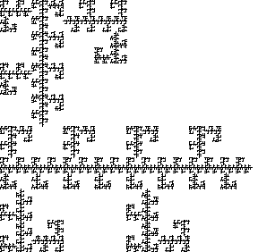
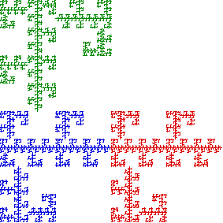

|  |  |
This fractal is not connected because the green part is separated from the red and blue parts.
On the other hand, the red and blue parts have a point in common.
That point belongs to the line from
Self-similarity and the disconnect between the green part and the red and blue parts guarantees the fractal has infinitely many components: it is far from connected.
Yet this is not a Cantor set, because it contains infinitely many line segments.
Hence the name hybrid. Suggestions of alternative terminology are welcome.
Return to Gasket Relatives.